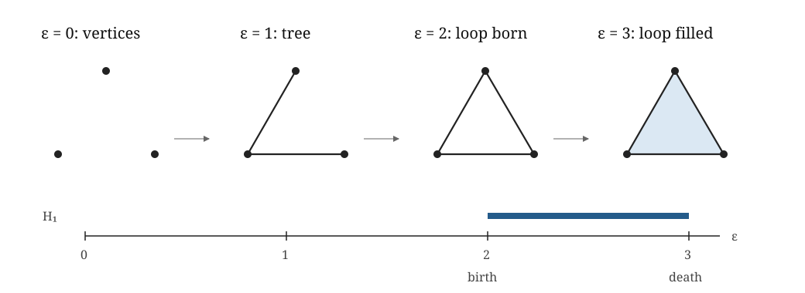
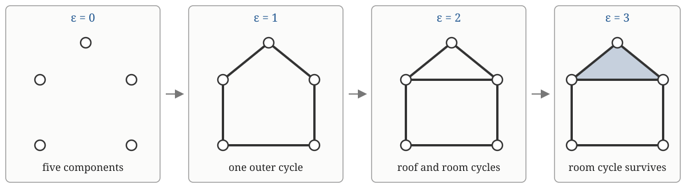

A list of Betti numbers tells us how many classes exist.
It does not tell us which earlier classes survived.
Week 3 used the A, B and C example to motivate multiple resolutions and built the nested family
\[K_0\subseteq K_1\subseteq\cdots.\]
Week 4 asks what the nested complexes alone do not tell us: which earlier homology class became which later class?
\[K_i\hookrightarrow K_j\]
means every simplex of \(K_i\) is also in \(K_j\).
\(K_j\) may contain additional simplices; the old simplices do not grow.
induces
\[H_p(K_i;\mathbb F)\xrightarrow{(\iota_{i,j})_*}H_p(K_j;\mathbb F).\]
The maps are the memory.
Outline triangle \(\hookrightarrow\) filled triangle.
The edge cycle remains as a chain. It becomes the boundary of the new face:
\[[z]\longmapsto0.\]
▶ Likely sticking point. The induced map on homology need not be injective.
Before: \(H_0\cong\mathbb F_2^2=\langle e_1,e_2\rangle\).
After:
\[e_1\mapsto e,\qquad e_2\mapsto e.\]
The direction \(e_1+e_2\) is killed.
\[V_i=H_p(K_i;\mathbb F),\qquad\varphi_{i,j}=(\iota_{i,j})_*.\]
\[\varphi_{j,k}\varphi_{i,j}=\varphi_{i,k}.\]
◇ Object check. The module is every vector space and every compatible map, not merely the Betti numbers.
\[I[b,d)_a=\begin{cases}\mathbb F,&b\leq a<d,\\0,&\text{otherwise}.\end{cases}\]
For suitable one-parameter modules:
\[V\cong\bigoplus_\ell I[b_\ell,d_\ell).\]
Persistence module: spaces and maps.
Barcode: interval summands.
Diagram: birth-death points.
Closely related, but not the same object by definition.
Order simplices compatibly with the filtration.
Reduce the boundary matrix over \(\mathbb F_2\).
Lowest 1 + column index \(\longrightarrow\) birth-death pair.
Unpaired birth \(\longrightarrow\) essential within the computed range.

Vertices \(\to\) component births.
Connecting edges \(\to\) component deaths.
Final edge \(\to\) one-cycle birth.
Triangular face \(\to\) one-cycle death.
Matrix pairings \(\to\) barcode intervals.

At the first edge stage, the outer cycle is \(c\). Adding the roof-base edge splits our convenient description into the roof cycle \(r\) and room cycle \(q\):
\[c=r+q.\]
Filling the roof sends \([r]\mapsto0\) while \([q]\) survives. Thus
\[[c]\mapsto[r+q]\mapsto[q].\]
The Week 4 notes show the complete matrices and induced maps.
Week 3 used ball radius \(r\): \(d(x_i,x_j)\leq2r\).
ripser reports the distance threshold
\[\varepsilon=2r.\]
Name the convention before interpreting coordinates.
Long interval means survival across the selected filtration range.
It does not automatically mean scientific relevance, statistical surprise, predictive value or robustness to a different model.
The walkthrough now computes a persistence diagram, slightly perturbs the observations and computes a second diagram.
We need to ask:
The first two questions motivate bottleneck distance. The third motivates the stability theorem.
Match diagram points to each other or to the diagonal.
\[d_B(D,E)=\text{smallest possible worst matching cost}.\]
Deleting a bar \([b,d)\) by matching it to the diagonal costs
\[\frac{d-b}{2}.\]
Fix a homology dimension and coefficient field.
For tame \(f,g:X\to\mathbb R\) on the same triangulable space, using sublevel sets:
\[ d_B(D_p(f),D_p(g)) \leq \|f-g\|_\infty. \]
If \(|f(x)-g(x)|\leq\delta\) everywhere, their diagrams differ by at most \(\delta\) in bottleneck distance.
Here tame means that only finitely many homological changes occur in the filtration.
Triangulable means that \(X\) has the topological type of a simplicial complex. It is a classical regularity hypothesis that excludes pathological spaces and makes the homology changes manageable. Later formulations use broader tameness conditions.
After the best matching, allowing matches to the diagonal:
† Qualification. Different point clouds, metrics or filtrations require their own stability result and input distance.
Stability controls sensitivity, not scientific meaning.
2002: persistence and its algorithm.
2005: the algebraic and barcode framework.
2007: stability supplied the robustness guarantee needed for noisy data.
controlled input perturbation \(\Longrightarrow\) controlled diagram perturbation
It made persistence compelling for data analysis, but it does not validate the modelling choices before the theorem is applied.
Birth: a new independent organisation becomes detectable.
Death: it merges or becomes filled under the construction.
Persistence: the range over which it stays distinguishable.
Then ask: under which representation, metric and filtration?
See the applied glossary for the running translation layer.
TDA MasterClass